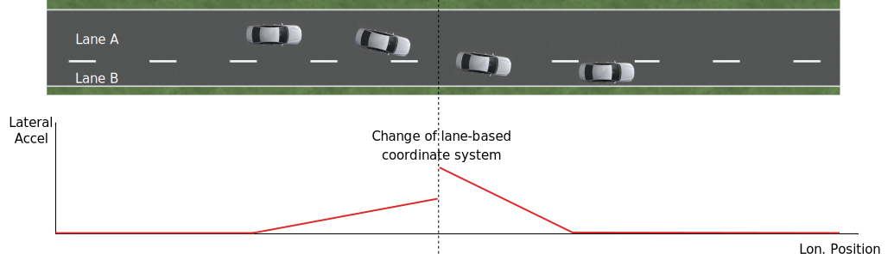
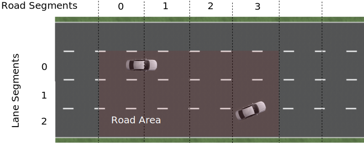

ad-rss-lib Realization
RSS checks and response¶
To check whether the ego vehicle is in a safe state, all the objects in the surrounding must be respected. To do so the ad-rss-lib will perform an analysis against all the objects in the environment individually. Meaning, for each object in the environment the ad-rss-lib will check whether the ego vehicle conflicts with this object. Therefore, longitudinal and lateral checks are performed. As mentioned earlier, these checks are performed separately for each object - ego vehicle pair, i.e. for each situation.
At this, the type of situation has to be evaluated upfront outside of this library implementation. Otherwise, this RSS implementation would enforce a concrete representation of the environment and i.e. the map data with lanes, intersections and priority rules. The situations types that have to be identified are:
-
both vehicles drive on the same road
- in the same direction
- in opposite direction
-
both vehicles drive on different roads that are connected by an intersection
- the ego vehicle has priority over the other vehicle
- the other vehicle has priority over the ego vehicle
- both vehicles have same priority (no vehicle has priority over the other vehicle)
Longitudinal conflicts¶
The behavior for longitudinal conflicts (checks and response) for vehicles driving in the same direction are implemented as described in the definitions 1, 3 and 4 of the RSS paper. For the case of vehicles driving in opposite directions, the implementation follows the definitions 2, 3 and 4 of the paper.
In detail, the current realization looks as follows:
Same direction
If the longitudinal distance is not safe and
- if the ego vehicle is in front, the other vehicle has to break longitudinally. There is no longitudinal response for the ego vehicle issued.
- otherwise, the ego vehicle has to break longitudinally with at least \alpha_{min,brake}.
Opposite direction
If the longitudinal distance is not safe and
- if the ego vehicle is driving in the correct direction, the ego vehicle has to break longitudinally with at least \alpha_{min,brake,correct}.
- otherwise, the ego vehicle has to break longitudinally with at least \alpha_{min,brake}.
Lateral conflicts¶
The lateral checks and the proper response follow the definitions 5, 6, 7 and 8 of the RSS paper.
In detail, the current realization looks as follows: If the lateral distance is not safe and
- if the ego vehicle is on the left side, the ego vehicle has to break laterally with at least \alpha^{lat}_{brake,min} on the right side
- if the ego vehicle is on the right side, the ego vehicle has to break laterally with at least \alpha^{lat}_{brake,min} on the left side
- otherwise, the ego vehicle has to break laterally with at least \alpha^{lat}_{brake,min} on both sides
Combining longitudinal and lateral response¶
The combination of longitudinal and lateral response of a single situation (object - ego vehicle pair) is implemented as described in definitions 9 and 10 of the RSS paper.
In detail, the current realization looks as follows:
If the situation is dangerous (i.e. there exists a longitudinal and a lateral conflict), the stored last non-dangerous state of the of the same situation (ego-vehicle - object pair) is checked:
- if there was no lateral conflict, the combined response breaks laterally
- if there was no longitudinal conflict, the combined response breaks longitudinally
Combining all situations of a given point in time¶
Since this RSS implementation performs the above mentioned check separately for each situation, the overall response of the ego vehicle has to consider all individual situations of the current scene.
The current realization loops over all situations and combines the lateral left, the lateral right and the longitudinal response states of these by selecting the most severe response of each component respectively.
Important
This initial implementation does not yet cover evasive maneuvers to compensate for improper behavior of others according to definitions 11, 12 and 13 of the RSS paper.
If the car finds itself in a dangerous situation one possible action is always to brake. This should always result in a safe state, if both vehicles respond properly according to RSS. Improper behavior of others might still lead to an accident. This is where evasive maneuver could prevent from this. To do so, it must be assured that this lateral movement brings the vehicle into a safe state and does not conflict with another vehicle. In order to determine whether a lateral movement solves the conflict a prediction of the state would be necessary.
Such a naive predication following definition 11 of the paper is not available yet in this initial implementation. In addition, the ad-rss-lib currently has no notion of drivable freespace area. Hence, it cannot determine that an evasive maneuver initiated by RSS will cause an accident with an obstacle or forces the vehicle to leave the road.
Therefore, it is impossible for the ad-rss-lib in its current form to detect whether a lateral evasion is really feasible. Hence, the ad-rss-lib will not initiate a lateral evasive maneuver according to definitions 12 and 13 of the paper. Instead, it will only restrict the movement in the dangerous direction.
Please note that this restriction does not hinder the driving policy to find a better escape for the current situation. If this is the case, for example by braking harder, or changing lanes quicker, RSS will not forbid this maneuver, as long as it does not create another conflict, and is compliant with the restrictions calculated by RSS.
Handling of Intersections¶
The behavior for intersection conflicts (checks and response) for vehicles is implemented as described in the definitions 16, 17 and 18 of the RSS paper
In detail, the current realization looks as follows:
- It is checked, if a non-prioritized vehicle was able to stop in front of the intersection. If this is the case, the non-prioritized vehicle is supposed to brake, whereas the prioritized vehicle can continue driving as before.
- If 1. does not hold, it is checked, if there is a safe longitudinal distance between the two vehicles according to Definition 17.2 of the RSS paper. In this case, the leading vehicle can continue driving, whereas the following vehicle has to respect the "stated braking pattern".
- If 1. and 2. do not hold, there is a time period in which both vehicles may be crossing the intersection. In this case Definition 18.3 of the RSS paper applies, i.e. both cars have to brake laterally and longitudinally with at least \alpha_{min,brake}.
Note
Case 1. is the direct realization of Definition 17.1, where it is mentioned that the vehicle was able to stop safely. However, as a consequence, the prioritized vehicle is not forced to brake, if the non-prioritized vehicle does not respect RSS. Since the evasive maneuvers are not yet implemented such kind of improper behavior cannot be handled by the current ad-rss-lib.
Important
In the current realization of the ad-rss-lib, it is assumed that there is always a lateral conflict in case of intersections. This will be addressed in future.
Response Time and Other Parameters¶
According to the papers each traffic participant has a response time, and is objected to respect certain acceleration limits (e.g. maximum acceleration \alpha_{accel,max}, maximum deceleration \alpha_{brake,max}, etc.). Within this response time the participants (including the ego vehicle) are allowed to accelerate with at most \alpha_{accel,max}, and thus increase their velocity. The distance covered during the response time is part of the safe distance, as defined by RSS. Hence, upon entering a dangerous situation, it would be possible to accelerate with up to \alpha_{accel,max} for at most t < response time, as this acceleration is already considered.
Note
It is important to note that the implementation of the ad-rss-lib in the library only uses parameters, but not the exact value. By this means, the library is independent to changes of the parameter values. Instead, the user defines a feasible parameter set, which is provided as input to the ad-rss-lib.
A discussion on the parameter selection can be found in the parameter discussion section.
Situation-Based Coordinate System¶
As described in the RSS paper in section 3.2 "Preliminaries — A Lane-Based Coordinate System", all RSS calculations are based on a lane-centric coordinate system. This system uses adjacent, straight lanes of constant width, and thus requires a transformation of the object states from Cartesian into the lane space. This transformation into a lane-based coordinate system is described by a bijective function, as pointed out by paper 1. Therein, the lateral position of a vehicle within the lane is mapped to a parametric interval [-0.5; 0.5], where the lane boundaries are fixed at the borders of the interval. The advantage of such a coordinate system over the Cartesian system is that it allows the direct calculation of longitudinal and lateral distances of objects.
However, when transforming the Cartesian space into a lane-based coordinate system, several challenges have to be taken into consideration.
Comparing movements in lane-based coordinate systems¶
During the transformation process to a lane-based coordinate system, not only the position but also the the velocities and accelerations have to be transformed. As a matter of fact, the resulting values depend on the actual lane geometry, and thus, velocities and accelerations of different lane-based coordinate systems cannot be compared to each other anymore (ego vehicle - object pair). To illustrate this problems, let us consider the following examples:
Discontinuity Problem: Two parallel lanes, different width
|  |
|---|
| Figure 1: Two parallel lanes with different width causing a discontinuity in lateral acceleration |
Let us illustrate this on a simple example with two parallel lanes of different width. Let the left lane A have a constant width of 4 m where the right lane B only has a constant width of 2 m. If both lanes define their own lane-based coordinate system LCS_A and LCS_B, a Cartesian lateral acceleration value of 1 m/s^2 becomes 0.25 lat/s^2 in LCS_A and 0.5 lat/s^2 in LCS_B. Therefore, the formula for constant accelerated movement has to use different acceleration constants in different lanes. This situation is getting even worse, if a car is changing the lane from lane A to lane B: then the closed formula for constant accelerated movement to calculate the lateral distance over time cannot be applied anymore directly.
Changing Acceleration Problem: Lane is widening/narrowing
 |
|---|
| Figure 2: Changing lane width and its impact on the lateral acceleration |
Let us consider a lane with changing width in another example. If the lane's width at the beginning is 4 m and 100 m away the lane is narrowing to 2 m. In such a case the Cartesian lateral acceleration value of 1 m/s^2 is changing from 0.25 lat/s^2 at the beginning towards 0.5 lat/s^2 while advancing within the lane.
Changing Distances Problem: Lane with a narrow curve
 |
|---|
| Figure 3: Lane describing a narrow 180° curve and its impact on driven distances |
This section illustrates a longitudinal situation similar to the lane widening example. Let us assume the lane has a constant width of 4 m describing a curve with inner radius of 50 m covering 180°. The inner border of the lane has a length of about 157.1 m, the center line 163.4 m the outer border 169.7 m. In that situation a longitudinal acceleration value will evaluate to 1.0 lon/s^2 for the center line, 0.96 lon/s^2 for the outer border and 1.04 lon/s^2 for the inner border. Therefore, the longitudinal acceleration changes over time, if the vehicle changes its lateral position within the lane.
Summary
As sketched in the previous sections both the longitudinal as well as the lateral acceleration values, as well as velocities within the lane-based coordinate system cannot be considered as constant anymore. Moreover, these values do not only change within one coordinate system, but also when changing from one lane-based system to another one. To overcome this issue, we use a "Situation-Based Coordinate System", that is described in detail in the next section. This system is unique for each situation (ego vehicle - object pair) and comprises all lanes required to describe this situation.
Chosen Design: Individual Situation-Based Coordinate System
As RSS performs a worst case assessment, the idea followed by the ad-rss-lib implementation is to calculate the min/max position values of the vehicles within the situation specific coordinate system. According to the constellation of the vehicles within the situation, the respective worst case lateral and longitudinal border values are selected and processed by the RSS formulas. Like this, it is assured that the calculations are sound, nevertheless this might lead to a more cautious behavior of the vehicle. The following subsections describe the selected approach in more detail.
Two parallel lanes, different width
As described in the previous section, the border between neighboring lanes of different width introduces discontinuities of the lateral acceleration values (see Figure 1).
As the ad-rss-lib judges the relative situation between the ego vehicle and the other objects one by one individually, it is not required to distinguish between the actual lanes within the individual distance calculations. Combining all lanes relevant for the individual situation s_i between ego vehicle and object o_i into one single situation-based coordinate system SCS_i resolves all discontinuities, as depicted in Figure 4.
 |
|---|
| Figure 4: Avoid discontinuities by using one single situation-based coordinate system |
Coming back to the concrete example from Figure 1, left lane A having a constant width of 4 m and right lane B having a constant width of 2 m, both lanes together have a resulting width of 6 m and form an area with continuous lateral acceleration (see also illustration in Figure 4).
The check of the ego vehicle with another object o_j which is two lanes at the right of the ego vehicle in a lane C having a constant width of 3 m, has to take all three lanes into account with resulting width of 9 m. Therefore, a different situation-based coordinate system SCS_j is required, when checking another object.
Lane is widening or has a narrow curve
The individual situation specific coordinate system SCS does not yet cover the situations of widening lanes or narrow curves. To take the variation of the lane width and length into account, it is required to apply the extrema within the respective SCS accordingly.
Again, coming back to the examples from above, let us have a lane with non constant width between 2 m and 4 m. Then the transformation of the maximal possible lateral position value of the vehicle into the situation coordinate system SCS has to take the maximum width of 4 m into account, while the transformation of the minimal possible lateral position has to be transformed with the minimum width of the lane of 2 m. Like this it is guaranteed that we don't underestimate the distances of the vehicles towards each other. As a result, it is ensured that under all conditions, the safety distances are calculated in a conservative manner.
In a similar way, it is possible to transform the longitudinal position values into the situation-based coordinate system SCS_k.
Note
The performed operations can be interpreted as enlarging the vehicles bounding boxes to ensure the worst case is covered.
Road area
To overcome the problems of discontinuities, changing lateral and longitudinal distances resulting in not comparable velocities and accelerations the situation based coordinate system merges in a first step all lanes segments relevant to the situation (ego vehicle - object pair) into one situation specific metric road area. One can imagine this step as the creation of a bounding box around the two vehicles that is large enough to cover the relevant positions of those while ignoring actual markings on the road between the lanes. By this, especially the physical lateral velocities and accelerations within the Cartesian 2D space of the road area can be measured and calculated straight forward without any discontinuities (see also the illustrations in Figure 5 and Figure 6).
|  |
|---|
| Figure 5: Creation of the situation-based coordinate system: The road area (red) consists of all lane segments along the road relevant for the situation between the two vehicles |
 |
|---|
| Figure 6: Creation of the situation-based coordinate system: Worst-case transformation of the vehicle bounding box. The metric road on the left leads to transformed vehicles and their bounding boxes (red) on the right, sketched for a narrowing road area at the top and a curve at the bottom. |
It is worth to mention, that in these calculations the actual shape of the lane is not used. Therefore, detailed knowledge of the actual lane geometry is not required. The absolute maximum and minimum width and length values of the lane segments is sufficient to calculate a proper transformation into the space of the situation specific coordinate systems.
Note
In case of intersections both vehicles define their own road areas including the intersecting parts. The case that a lane is ending or two lanes are merged into one single lane have to be treated like intersections since a lateral conflict is unavoidable.
Considerations on reverse transformation of the proper response
As the proper response is referring to the situation-based coordinate systems, the response has to be transformed back considering the actual lane geometry. Therefore, first the transformation into the vehicle-specific lane-based coordinate system is required, and then the transformation into the Cartesian space is performed.
A simple example illustrates this: a vehicle driving in a curve will for sure have to perform a lateral acceleration in Cartesian space otherwise it will leave the lane because of the centripetal force, as illustrated in Figure 7. However, in the vehicle specific lane-based system the lateral acceleration will be 0.
| Figure 7: Constant drive around a curve will result in a zero lateral acceleration in a lane-based coordinate system and in a non-zero acceleration in a cartesian system |
Because the proper response of RSS is defined with respect to the actual lane the vehicle is driving in, it is required to assure that the reverse transformation of the proper response considers only the ego-lane and not the complete situation specific coordinate systems. For example, let us consider a scenario as depicted in Figure 8, where one widening lane A and one narrowing lane B are neighbors in such a way that the overall width of the road is constantly 6 m. Lane A starts with 2 m and ends with 4 m width, whereas lane B starts with 4 m and ends with 2 m width. A lateral velocity of 0 in respect to the whole road differs from the definition of a lateral velocity of 0 in lane A/lane B in Cartesian space.
| Figure 8: Different lateral accelerations in a lane-based system and Cartesian system for a vehicle following the centerline of lane B |
Note
It is worth to note that in the particular implementation of the ad-rss-lib in the library at hand, the reverse transformation from the situation-specific into a vehicle-centric lane coordinate system is not required, as the RSS response is defined such that it is independent of these two coordinate system.
Summary
The presented construction of a continuous situation-based coordinates system will allow the pairwise calculation of the safe distances between ego vehicle and objects with the assumption of constant acceleration. Still, the worst case assessment of RSS is not violated. This situation-based coordinate system in conjunction with the situation specific consideration of the position extrema allows the calculation of the safe distances, the decision on dangerous situations and deduction of a proper response.
The main benefits of the selected Situation Based Coordinate System definition are: * Velocity and acceleration values in longitudinal and lateral lane directions do not change when transforming into the situation based coordinate system * All formulas for constant accelerated movement can be applied in the situation based coordinate space. * Distance calculations in situation based coordinate systems are simple additions or subtractions * The transformation into the situation based coordinate system is simple and therefore can be implemented easily with the restricted computational resources of safety controllers
For safety considerations, it is crucial to do all calculations considering the worst case assumption. Therefore, it is required to choose the correct minimum or maximum value of the positions in the situation-based coordinate system to assure that always the worst case is considered.
Design alternative: Iterative Approach [optional]¶
 |
|---|
| Figure 9: Illustration of an iterative approach to calculate non-constant acceleration, velocity etc. |
Another possible way to handle the non-constant acceleration values would be an iterative approach: based on the position, the velocity and the acceleration values at the given position at time t_0, the position at time t_1 is calculated. The smaller the time interval between the iteration steps is chosen, the smaller the calculation error gets (see figure above).
One drawback of the iterative approach is that the RSS implementation has to get to know the lane geometries in detail to be able to calculate the acceleration values to be used for every position within the situation-based coordinate systems. Therefore, this design approach is not selected by this ad-rss-lib implementation.
Summary¶
Summary
- RSS checks are performed on the current state on a ego vehicle - object pair basis
- In dangerous situations only braking maneuvers are issued. RSS does not initiate evasive maneuvers, but will not hinder the driving policy to execute lateral evasive maneuvers, as long as these are compliant with the required RSS response.
- To handle changing lateral/longitudinal lane geometries when
transforming the Cartesian space into the situation based coordinate system,
the vehicles position extrema are chosen in such a way that accelerations
can still be treated as constant, but guarantee safe operation (see
<